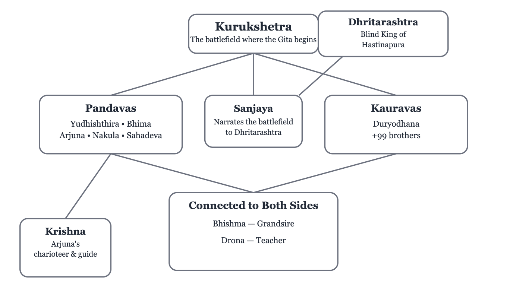

Ongoing
Bhagavad Gita: A Journey from Confusion to Clarity
Exploring the Inner Battlefield and the Path of Wisdom: Self, Duty, and Conscious Action
The Bhagavad Gita is a conversation between Arjuna and Krishna, unfolding on the battlefield of Kurukshetra just before a war begins. Arjuna is caught between his duty and his love for the people standing on the other side. His confusion becomes the doorway to a much deeper conversation about who we are, how we act, what we are attached to, and what it means to live with clarity.
But the Bhagavad Gita does not begin with this conversation.
How did Arjuna arrive here in the first place?
The Bhagavad Gita is part of the sixth of the eighteen books of the Mahabharata, known as the Bhishma Parva. The Gita itself takes place across Chapters 23–40, just before the battle of Kurukshetra begins. By the time we reach the battlefield, the story has already unfolded across the five books before the Bhishma Parva—through generations of family relationships, rivalries, choices, and conflicts that have led everyone to this moment.
Before the Gita
A small note before we begin: There will be many names along the way, and it can feel confusing at first. But don't worry about remembering everyone. Just as people become familiar to us through the different relationships they hold in our lives, these characters will gradually become familiar as the story unfolds.
The Bhagavad Gita takes place at a very specific moment in the Mahabharata: just as the armies of the Pandavas and Kauravas are about to enter battle.
But this battlefield did not appear overnight. The five books before it lay the foundation for everything that is about to happen — the family relationships, rivalries, choices, promises, and conflicts that eventually lead to Kurukshetra.
Here is a glimpse of the story that brings us to the battlefield.
1. Adi Parva — The Beginning
The story begins with the Kuru dynasty, introducing the Pandavas, Kauravas, Bhishma, Drona, Krishna, and the relationships that connect them.
2. Sabha Parva — The Dice Game
After the Pandavas establish their kingdom and gain great power, Duryodhana becomes envious of their success. At his urging, and with Shakuni acting as the skilled player of dice, Yudhishthira is invited to a game of dice in the royal court.
Yudhishthira accepts the invitation and gradually loses his kingdom, his wealth, his brothers, himself, and Draupadi. The game leads to Draupadi's humiliation in the court and eventually to the Pandavas' exile.
3. Vana Parva — The Forest
The Pandavas spend twelve years in exile, facing hardship and gathering the strength and wisdom that will shape what comes next.
4. Virata Parva — The Year in Disguise
The Pandavas spend their final year of exile in disguise. After fulfilling the terms they agreed to, they return to claim back their kingdom as promised. But the Kauravas refuse to honour the agreement.
5. Udyoga Parva — The Road to War
Krishna attempts to negotiate peace between the two sides, but the Kauravas refuse to give back what was promised. The effort fails, and war becomes unavoidable.
6. Bhishma Parva — The Battlefield
The armies gather at Kurukshetra. Arjuna asks Krishna to place their chariot between the two armies — and sees the people he loves standing on both sides.
This is where the Bhagavad Gita begins.
Reading the Bhagavad Gita Together
Now that we have a glimpse of the story that brought everyone to Kurukshetra, we can begin reading the Bhagavad Gita itself.
One chapter at a time, read it slowly. I’ll share what catches my attention, what I had to look up, and the questions that arise along the way below.
Read the chapter first, then come back and explore together with me.
Three Things to Carry While Reading
1. What is happening?
The story. What is happening in the scene, and where are we in the story?
2. What is being said?
The literal meaning. What is Krishna, Arjuna, or the other characters actually saying?
3. What might this teach?
The reflection. What questions, ideas, or lessons might we take from what we have read?
Chapter 1 — Arjuna Vishada Yoga
The Yoga of Arjuna's Despair
Chapter 1 opens with Dhritarashtra, the blind king, asking Sanjaya what is unfolding on the battlefield. As Sanjaya describes the scene, the warriors are introduced and Arjuna's despair begins to emerge.
Who Are All These People?
One of the first things I found myself wondering about in Chapter 1 was not actually about the philosophy—it was about the names.
Even in the very first verse, I was already asking myself: Who is Dhritarashtra? Who is Sanjaya? Why is Sanjaya the one describing the battlefield?
And then more names begin to appear—Duryodhana, Bhishma, Drona, Arjuna, Krishna, and many others.
I quickly realised that understanding the relationships between these characters is important to understanding why Arjuna is so overwhelmed when he looks across the battlefield.
So, before diving deeper into the chapter, I made a little mind map to help understand who everyone is and how they are connected.

Who's Who
Curious about a name? Hover over it.
Pandava Army
Bhima
Bhima
Second of the five Pandava brothers, known for his great strength.
Yuyudhana
Yuyudhana (Satyaki)
A Yadava warrior and ally of the Pandavas.
Virata
Virata
King of Matsya and an ally of the Pandavas.
Drupada
Drupada
King of Panchala and father of Draupadi.
Dhrishtaketu
Dhrishtaketu
King of Chedi and an ally of the Pandavas.
Chekitana
Chekitana
A Yadava warrior fighting alongside the Pandavas.
Purujit
Purujit
A relative and ally of the Pandavas.
Kuntibhoja
Kuntibhoja
King and relative of the Pandavas; foster father of Kunti.
Shaibya
Shaibya
An elder king and ally of the Pandavas.
Yudhamanyu
Yudhamanyu
A warrior fighting for the Pandavas.
Uttamaujas
Uttamaujas
A warrior fighting for the Pandavas.
Abhimanyu
Abhimanyu
Son of Arjuna and Subhadra; a young Pandava warrior.
Sons of Draupadi
Sons of Draupadi
The five sons of Draupadi, one by each of the Pandava brothers.
Kaurava Army
Drona
Drona
Martial teacher of both the Pandavas and Kauravas.
Bhishma
Bhishma
The grandsire of the Kuru family and a great warrior.
Karna
Karna
A great warrior and close ally of Duryodhana.
Kripa
Kripa
Elder warrior and teacher in the Kuru court.
Ashvatthama
Ashvatthama
Son of Drona and a warrior on the Kaurava side.
Vikarna
Vikarna
One of Dhritarashtra's sons and a Kaurava warrior.
Bhurishrava
Bhūrishrava
Son of Somadatta and a warrior fighting for the Kauravas.
Other warriors
Other warriors
Duryodhana mentions that many other warriors are present on his side.
The People on the Other Side
Something that stood out to me is that Arjuna isn't facing strangers on the battlefield. The Pandavas and Kauravas are cousins, both belonging to the larger Kuru family.
He sees
Bhishma
Bhishma
The grandsire of the Kuru family. He took a great vow to give up
his claim to the throne and remain celibate, and later remained
loyal to the throne of Hastinapura.
, the grandsire of the family, and
Drona
Drona
The teacher of both the Pandavas and Kauravas. He trained them
in warfare and was especially known as Arjuna's teacher in archery.
, his teacher.
But Arjuna isn't the only one facing a difficult situation. Bhishma and Drona are also standing on the battlefield, facing people who are their own family and, in Drona's case, even his students. They have chosen to fight on the Kaurava side, yet they must face the very people they have loved, taught, and protected.
Arjuna isn't simply looking at an opposing army. He is looking at his own family — his cousins, his grandfather, his teacher, relatives, friends, and people he knows.
This makes the conflict feel deeper than simply choosing between winning and losing a war. There is a sense that almost everyone on the battlefield is caught in a web of relationships and duties that makes the idea of simply choosing a "side" much more complicated.
It also helps us understand why Arjuna begins to worry about the destruction of family dharma. The consequences of the war are not limited to those who fight; they threaten to disrupt the family and social order that holds their community together.
One Person, Many Identities
One thing I noticed while reading Chapter 1 is that Krishna and Arjuna are not always referred to simply as “Krishna” and “Arjuna”.
Instead, the translation uses descriptions such as son of Pritha, lord of the cows, killer of Madhu, and mover of men.
At first, I was like... wait, who are they talking about? But then I realised that these are different ways of referring to the same person, highlighting their family, qualities, relationships, or stories.
It made me think about how one person can carry many identities. We can be someone's child, someone's friend, someone's teacher, or be known for something we have done.
The person hasn't changed — but the aspect being highlighted has. Maybe we are like that too. We often think of ourselves as one fixed identity, but different parts of us appear depending on the people we are with and the roles we take on.
So one little thing I took away from Chapter 1: one person can carry many identities.
How Did We Get Here?
Chapter 1 may look like the moment when the battle is about to begin, but it also feels like a moment to look back at everything that has brought everyone here. Their duties, relationships, vows, loyalties, and past choices have all shaped the path that led them to this moment.
And perhaps this is where the deeper questions begin: What is our dharma? What is our duty? What makes an action right? And what happens when every choice seems to cause suffering for someone?
Arjuna is standing at the point where all these questions come together. The battle has not yet begun, but the conflict within him already has.
How do I know which path to take when there is no choice that feels completely right?
Chapter 2 — Samkhya Yoga
The Yoga of Knowledge
Chapter 2 begins with Arjuna still overwhelmed by what he saw on the battlefield. He questions whether victory can really bring happiness if that victory means killing his own relatives, teachers, friends, and people he loves.
1. Arjuna's Crisis (2.1–10): Understanding the Cause of Inaction
Arjuna questions:
"Even if we win, what joy is there in killing our relatives?"
At first, his refusal to fight appears compassionate. But Krishna looks deeper.
Arjuna finally surrenders:
"I am your disciple. Teach me." (2.7)
This marks the beginning of the teaching.
Instead of immediately telling him what to do, Krishna addresses the underlying confusion that has made action impossible.
Arjuna's inability to act is not simply caused by compassion. It arises from grief, attachment, fear of consequences, and confusion about his identity and duty. Throughout the chapter, Krishna gradually untangles these causes, leading Arjuna from paralysis toward ease in action (Karma Yoga).
Before asking "What should I do?", perhaps we first need to understand what is preventing us from seeing clearly.
2. The Eternal Self (2.11–30): What Are You Really Grieving?
Krishna introduces the foundation of the chapter.
The body changes. The mind changes. Our emotions change. Our relationships, roles, circumstances, and even our sense of who we are can change.
Yet Krishna points to something deeper that is not subject to the same kind of change. The Self is described as unborn, undying, and untouched.
"Weapons cannot cut it; fire cannot burn it." (2.23)
Rather than simply denying grief, Krishna invites Arjuna to distinguish between what changes and what is truly enduring.
How often we define ourselves through things that are constantly changing. We might think, I am my body, I am my thoughts, I am this role, or I am what I have achieved.
But if all of these are changing, then what happens when we use them as the foundation of our identity?
This doesn't mean that emotions should be ignored. Arjuna's grief is real. Rather, he is being asked not to mistake his present emotional experience for the whole of who he is.
3. Samkhya (2.31–39): Seeing Reality Clearly
Krishna then introduces Samkhya, a way of seeing reality through discrimination. It helps distinguish between what is changing and what is not.
Samkhya, distinguishes between Purusha and Prakriti:
- Purusha — consciousness, the witnessing principle.
- Prakriti — nature, including the body, mind, senses, and their changing processes.
Arjuna is caught in the movements of his mind — grief, fear, attachment, memories, and ideas about what might happen. Krishna seems to be asking him to develop enough discernment to see these movements without being completely governed by them.
4. The Guṇas (2.45): Are We Being Moved by the Nature?
Krishna tells Arjuna to become free from the three guṇas, the qualities through which Prakriti operates:
- Sattva — clarity and harmony.
- Rajas — activity, desire, and restlessness.
- Tamas — inertia, dullness, and confusion.
Just as:
Some days we feel energetic and driven.
Some days we feel peaceful and clear.
Some days we simply don't want to do anything.
It does not mean that these qualities simply disappear. Rather, we can learn not to be completely identified with or ruled by them.
These states change. They are movements of nature, not the deepest Self, not the whole of who you are.
5. Karma Yoga (2.47–53): Ease in Action
Arjuna is caught between two possibilities: "Should I act or withdraw?"
Krishna's answer is not simply to choose one over the other, but to understand how action can be performed without attachment to its results.
Act from clarity without clinging.
Ease in Action
You have a right to action.
Not to the fruits of action.
Nor should you cling to inaction.
Ease does not come from guaranteed outcomes.
It comes from no longer making outcomes the foundation of your identity.
Yoga is skill in action. (2.50)
- the ability to act appropriately while remaining inwardly steady.
6. Sthita prajna (2.54–72): A Person of Steady Wisdom
Arjuna asks:
"What does a person of steady wisdom look like?"
Krishna describes someone who:
- is not pulled by endless desires,
- remains balanced in pleasure and pain,
- watches the senses without becoming enslaved,
- acts from inner fullness.
Steady wisdom is not emotional numbness.
It is remaining spacious while experience continues to arise.
Chapter 2 traces a movement from inaction → integration:
noticing the causes of inaction
→ distinguishing the eternal Self from what is changing
→ developing discernment through Samkhya
→ becoming less ruled by the gunas
→ practicing Karma Yoga
→ integrating understanding into a life of steady wisdom.
Chapter 3 — Karma Yoga
The Yoga of Action
Chapter 3 begins with Arjuna still confused about the relationship between knowledge and action. If insight and wisdom are so important, why should he continue to act?
1. Arjuna's Question (3.1–2): If Knowledge Is Higher, Why Act?
Arjuna questions:
"If you consider knowledge to be better than action, then why do you urge me to this terrible action?" (3.1)
Arjuna is still trying to understand whether freedom comes from stepping away from action or from acting differently.
Krishna begins by explaining that there are two foundations through which
human beings can approach life:
the yoga of knowledge and the yoga of action.
2. The Two Foundations of Life: Seeing and Living (3.3–9)
The yoga of knowledge (jnana) develops understanding and discernment.
The yoga of action (karma) brings that understanding into the way we live
and participate in the world.
Thinking of them as two parts of the same body: Eyes and Feet
- Eyes without feet can see the destination but never move.
- Feet without eyes can move quickly but wander.
Together, they become one practice.
Action itself cannot simply be avoided. As long as we are embodied and participating in life, we are acting in some way.
Breathing, thinking, digesting, speaking, choosing — even avoiding action is itself a kind of action.
The question therefore changes from: "How can I avoid action?" to "How can I act without being bound by action?"
Krishna distinguishes between two mistaken paths.
- The first is physical withdrawal while the mind remains attached:
Someone may stop working, but internally they continue replaying desires, fears, and comparisons.
- The second is acting while remaining inwardly free. Freedom is therefore not measured by stillness. It is measured by the quality of the mind while acting.
3. Yajna: Action as Participation in Life (3.10–16)
Krishna describes life as an interconnected cycle sustained through yajna — action performed as an offering rather than simply for personal gain.
We are not separate from the larger cycle of life. We receive from the world, and we also participate in sustaining it through our actions.
In this way, action is not merely about achieving something for ourselves. It can also become a form of participation, contribution, and reciprocity.
4. Karma Yoga: The Path of Selfless Action (3.17–24)
Krishna gives himself as an example. He says that there is nothing in the three worlds that he needs to accomplish or attain, yet he continues to act.
"There is nothing in the three worlds that I need to accomplish, nor anything unattained that I need to attain; yet I continue to act." (3.22)
This shows that action does not have to come from a sense of lack.
We often act because we want something we do not yet have. Krishna presents another possibility: to act even when there is nothing personal left to gain.
Action can become participation rather than acquisition.
He also explains that those who are respected have a responsibility because others may follow their example. Action therefore affects not only ourselves but also the larger world around us.
5. The Gunas and the Nature of Action (3.27–29)
Krishna then asks us to look more closely at what is actually moving our actions.
"The gunas of nature perform all actions." (3.27)
The three gunas — sattva, rajas, and tamas — are different tendencies within nature that influence how we think, feel, and act.
Sometimes an action comes from clarity. Sometimes it comes from restlessness, desire, fear, habit, or inertia.
We may immediately think, "I am doing this," without noticing what is actually driving the action.
Understanding the gunas therefore becomes part of discernment: learning to observe the forces moving through us rather than automatically identifying with every impulse.
6. Dharma: Acting According to What Is Ours (3.30–35)
Krishna then brings the teaching toward dharma and svadharma — one's own dharma.
Svadharma is not simply about choosing what we like or finding a perfect life purpose. It points toward the responsibilities and way of acting that genuinely belong to us in our particular situation.
"Better one's own dharma, though imperfectly performed, than another's dharma, even if performed perfectly." (3.35)
This becomes difficult because our perception can be clouded by desire, fear, attachment, comparison, and the gunas.
Discernment therefore does not necessarily mean knowing with absolute certainty what our dharma is. It means becoming clear enough to distinguish what is true from what we merely want, fear, or imagine.
7. Desire and the Loss of Discernment (3.36–43)
Arjuna asks why we sometimes act against our own understanding, as though something inside us is compelling us.
For example, there are times when we know something is wrong. Why do we still do it?
Krishna identifies desire, which can become anger when obstructed, as a powerful force that clouds understanding.
The senses are drawn toward their objects, the mind becomes attached, and desire can gradually take over discernment.
The practice is therefore not simply to stop acting, but to understand the forces behind action and gradually allow deeper discernment to guide them.
8. Karma Yoga: Seeing Clearly, Acting Fully
Chapter 3 brings knowledge and action back together.
Knowledge helps us see.
Dharma gives direction to our action.
Karma Yoga teaches us how to act without clinging to the fruits.
The Hierarchy Within:
Chapter 3 traces a movement from seeing clearly → acting fully:
→ understand what moves you: the gunas
→ recognize what is yours to do: your svadharma
→ practice Karma Yoga
→ act fully according to your own dharma, without clinging to the outcome
Therefore, knowing the Self to be beyond the intellect,
steady the self by the Self,
and conquer this difficult enemy called desire.
Chapter 4 — Jnana Karma Sanyasa Yoga
The Yoga of Knowledge, Action, and Renunciation
Chapter 4 opens with Krishna reminding Arjuna that true seeing isn't new — it is ancient, forgotten, and remembered again.
1. An Ancient Teaching Renewed (4.1–3)
Krishna tells Arjuna that the yoga he is teaching is ancient. It was passed from one person to another, but over time its understanding was lost. He is sharing it with Arjuna now as both a devotee and a friend.
2. Why Does Krishna Appear? (4.4–11)
Arjuna asks a reasonable question: How could Krishna have taught this yoga long ago if Krishna was born more recently?
Krishna replies that both he and Arjuna have passed through many births, but Krishna remembers them. He says that although he is unborn and imperishable, he manifests when dharma declines and adharma rises.
Dharma can mean righteousness, but it also carries a sense of right order and living in accordance with what sustains life. Krishna's appearance is connected to restoring that order.
He then says that people approach him in different ways, and he responds to them accordingly. (4.11)
3. The Creator Who Is Not Bound by Action (4.12–15)
Krishna observes that people often act in the hope of obtaining a particular result. He then describes a fourfold social order associated with guna (qualities) and karma (actions). (4.12–13)
The distinction is that he is not driven by desire for the fruits of action, nor changed or bound by acting. Krishna asks Arjuna to act with this understanding. (4.14–15)
4. Three Types of Action: Karma, Vikarma, Akarma (4.16–18)
Krishna says that even wise people can be confused about action. To understand it, Arjuna needs to distinguish three terms:
- Karma: action, especially prescribed or appropriate
action. When performed for personal reward, even a proper action
can bind the doer.
- Vikarma: wrong or prohibited action — acting contrary
to what ought to be done.
- Akarma: inaction or non-action — actions performed without selfish attachment or done purely as an offering to the Divine.
The distinction is not simply between doing something and doing nothing. These are not always clear from outward appearances. Someone may look active while acting without attachment. Someone else may look inactive while avoiding what needs to be done out of fear or desire.
This is why Krishna saysthe nature of action is difficult to discern. (4.17)
"The wise see inaction in action, and action in inaction." (4.18)
For Arjuna, withdrawing from the battle would not automatically be akarma, just as fighting would not automatically be vikarma. He must discern what the situation asks of him and what is driving his choice.
Pause and reflect
Before acting, you can ask yourself:
- Is this an appropriate action to take?
- Am I doing it solely to secure a result for myself?
For example, I have agreed to teach a yoga class. Preparing and showing up for my students is an appropriate action. I may hope they enjoy it, but I can ask: “Am I focusing on what my students need, or am I worrying mainly about how they will judge me?”
Hoping for a good response is natural. The practice is to give my best without making that response the sole reason for acting.
5. The Wise Person Acts Without Being Bound (4.19–23)
Krishna describes a wise person — a pandit — whose actions are free from self-serving desire. Their actions are said to be "burned" in the fire of knowledge. (4.19)
They still work, make choices, and meet their responsibilities. What changes is their relationship with the result: they do not depend on it for their sense of completeness.
This is why Krishna can speak of someone acting and yet "doing nothing." He is describing inward freedom, not physical inactivity or a lack of responsibility.
Content with what comes, and steady through success and failure, the person continues to act without being caught by the outcome. Action done in this spirit becomes an offering. (4.21–23)
6. Seeing the Whole Action as an Offering (4.24–32)
In 4.24, Krishna describes a person who sees every part of an offering in relation to Brahman — the one who offers, what is offered, and the act of offering itself.
He then expands yajna beyond the fire ritual. An offering can also take the form of:
- Worship and devotion. (4.25)
- Restraint of the senses and their impulses. (4.26–27)
- Giving material resources, undertaking discipline, practicing yoga, or studying to deepen understanding. (4.28)
- Working consciously with breath or food intake. (4.29–30)
These are different forms of practice. What connects them is the intention to offer something — our resources, attention, effort, or habits — rather than acting only for personal gain.
Even ordinary acts such as breathing, eating, listening, and seeing
can be approached with awareness and a sense of offering.
What is one ordinary thing you do each day that you could approach
in this way?
8. Why Knowledge Matters (4.33–39)
After listing the different offerings, Krishna says that an offering made through knowledge is greater than one made only with material things. Action finds its fulfilment in understanding.
He encourages Arjuna to learn from those who have seen the truth: approach them, ask questions, and learn through sincere engagement. Arjuna's questions are therefore part of learning, not a failure to learn.
"As fire turns fuel to ash, knowledge transforms one's relationship with action." (4.37)
When a person sees more clearly and acts without selfish attachment, they are no longer caught in the same cycle of desire and action. This does not erase what happened in the world or remove the need to take responsibility for one's actions.
9. Clear the Doubt, Then Rise (4.40–42)
Krishna warns about doubt that keeps a person stuck. The difficulty comes when doubt prevents a person from learning or taking the next step.
"Cut through the doubt born of ignorance with knowledge, take up yoga and rise." (4.42)
Chapter 4 ends by returning Arjuna to action. Knowledge is not merely something to collect or contemplate. It helps him see clearly enough to meet what is before him.
The Thread Through Chapter 4
Krishna's teaching moves from who he is, to how action can cease to bind, to offering as a way of practising, and finally to knowledge that clears doubt.
The question beneath chapter 4 might be:
"Can I understand what I am doing deeply enough to act wholeheartedly,
without clinging to the outcome?"
Chapter 5 — Karma Sanyasa Yoga
The Yoga of Renunciation of Action
1. Renunciation or Action? (5.1–6)
Chapter 5 begins with Arjuna returning to a question that has been developing throughout the teaching. Krishna has spoken about renunciation, but he has also repeatedly asked Arjuna to act through karma yoga.
Arjuna therefore asks which path is better: renouncing action or performing action through yoga.
Krishna explains that both sanyasa (renunciation) and karma yoga can lead to freedom. But the wise understand that they are not ultimately opposed to each other. (5.4–5)
True renunciation is not simply stopping outward action. It is letting go of attachment to the results of action. In this sense, karma yoga becomes a way of practising renunciation while still participating fully in life.
For someone like Arjuna, who has responsibilities that cannot simply be abandoned, Krishna says that karma yoga is the more suitable path. Renouncing action without first developing this inner freedom can itself become difficult. (5.6)
Renunciation does not always mean leaving something behind. Sometimes it means changing the way we hold what we are already doing.
2. Acting Without Being Bound (5.7–12)
Krishna describes the person established in karma yoga. Such a person may still see, hear, touch, move, speak, eat, sleep, and carry out ordinary responsibilities.
The difference is in how they understand their actions. They do not cling to the idea that every action must produce a result that belongs to them.
They act as an offering, while letting go of attachment to the fruits. Those who act without attachment attain peace, while those who are attached to the results become bound by them. (5.12)
Pause and reflect
Think of something you are doing — or hesitating to do — that matters to you. Are you giving it your full attention, or are you hesitating to act because you are making the result a measure of your worth?
3. The City of Nine Gates (5.13–16)
Krishna then gives a striking image of the body as a city of nine gates. (5.13)
Krishna gives a striking image of the body as a
city of nine gates
City of nine gates
A metaphor for the human body. The nine gates are traditionally understood as
the two eyes, two ears, two nostrils, the mouth, the anus, and the reproductive organ.
Through these openings, we experience and interact with the external world. (5.13)
Krishna says that the Self does not ultimately perform actions or create the results of actions. Rather, the activities of the body, senses, and mind unfold through nature. The changing activities of body and mind are not the whole of who we are.
As understanding becomes clearer, the person begins to loosen the identification of the Self with every thought, impulse, and action.
4. Seeing with Equal Vision (5.17–21)
Krishna then describes what happens when knowledge becomes established. The wise person sees with equal vision.
Krishna gives several examples: a learned and humble person, a cow, an elephant, a dog, and a person regarded as an outcast. (5.18)
He is not saying that these beings are identical in their practical circumstances. Rather, the wise person recognises the same deeper reality within different forms of life.
This way of seeing changes how a person relates to the world. Instead of constantly dividing experience into what is valuable to "me" and what is not, there is a growing recognition of a shared underlying reality.
Such a person is less dependent on external pleasure for fulfilment. Pleasure and pain still arise, but they no longer have the same power to determine the person's inner state. (5.20–21)
"The wise see with equal vision." (5.18)
5. Freedom from Pleasure and Pain (5.22–26)
Krishna reminds Arjuna that pleasures arising from contact with external objects have a beginning and an end. Because they are temporary, they cannot provide lasting fulfilment. (5.22)
The practice is therefore not to reject every pleasant experience, but to understand its nature. If happiness depends entirely on circumstances remaining the way we want, we remain vulnerable to change.
The person who can remain steady when desire and anger arise. Such a person begins to discover a source of happiness that does not depend entirely on what happens outside.
This is another form of renunciation: becoming less dependent on the world to complete us.
6. Peace Through Understanding (5.27–29)
Near the end of the chapter, Krishna describes practices that turn the mind inward: regulating the senses, steadying the breath, and directing attention toward the inner Self. (5.27–28)
He then closes with a concise explanation of the source of peace. Krishna describes himself as the enjoyer of sacrifice and austerity, the great Lord of all worlds, and the friend of all beings. (5.29)
Peace therefore comes not simply from controlling the outside world. It comes from understanding our relationship with action, desire, the results of action, and ultimately with the Divine.
"Knowing me as the friend of all beings, one attains peace." (5.29)
The Thread Through Chapter 5
Chapter 5 begins with a question about renunciation and action.
Krishna's answer is that the wise do not see them as completely separate. Renunciation is ultimately an inner letting go of attachment, and karma yoga allows that renunciation to be practised while still living and acting in the world.
The teaching then moves from action, to the nature of the Self, to equal vision, and finally to inner peace.
We do not necessarily become free by doing less. We become free by understanding more deeply why we act, what we are attached to, and who we believe is doing the action.
Chapter 6 — Dhyana Yoga (Atma Samyama Yoga)
The Yoga of Meditation (Self-Mastery)
Chapter 7 — Jnana Vijnana Yoga
The Yoga of Knowledge and Realizations
Chapter 8 — Aksara Brahma Yoga
The Yoga of the Imperishable Brahman
Chapter 9 — Raja Vidya Raja Guhya Yoga
The Yoga of the Royal Knowledge and Royal Secret
Chapter 10 — Vibhuti Yoga
The Yoga of Divine Manifestations
Chapter 11 — Vishvarupa Darshana Yoga
The Yoga of the Vision of the Universal Form
Chapter 12 — Bhakti Yoga
The Yoga of Devotion
Chapter 13 — Kshetra Kshetrajna Vibhaga Yoga
The Yoga of the Field and the Knower of the Field
Chapter 14 — Gunatraya Vibhaga Yoga
The Yoga of the Three Gunas
Chapter 15 — Purushottama Yoga
The Yoga of the Supreme Person
Chapter 16 — Daivasura Sampad Vibhaga Yoga
The Yoga of Divine and Demonic Qualities
Chapter 17 — Shraddha Traya Vibhaga Yoga
The Yoga of the Threefold Faith
Chapter 18 — Moksha Sannyasa Yoga
The Yoga of Liberation through Renunciation